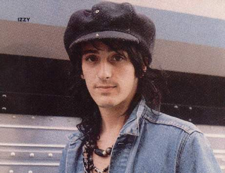
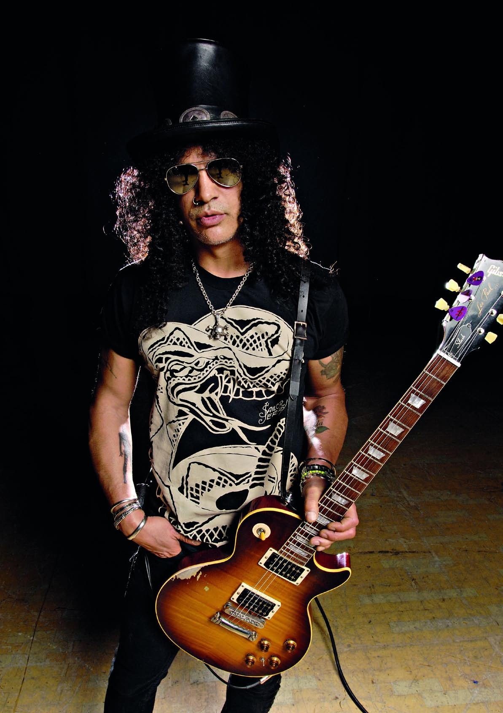
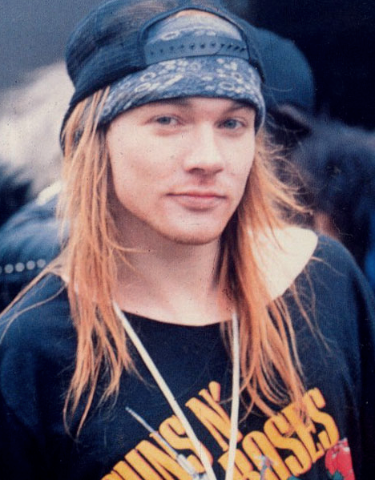
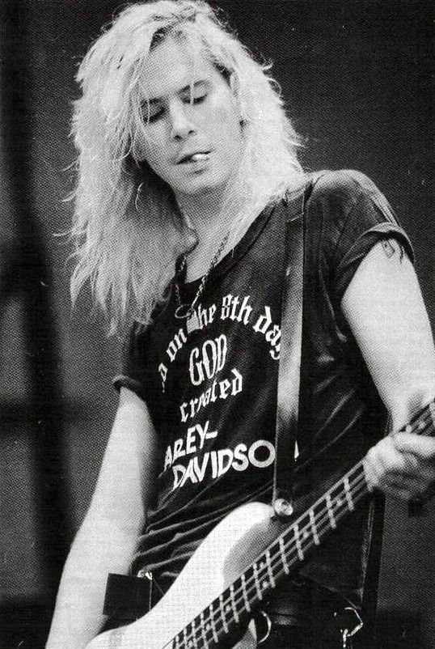
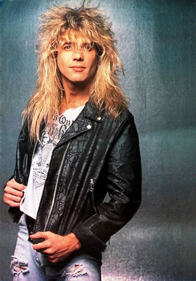
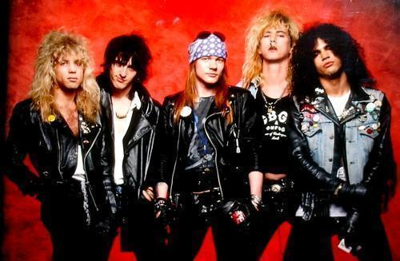
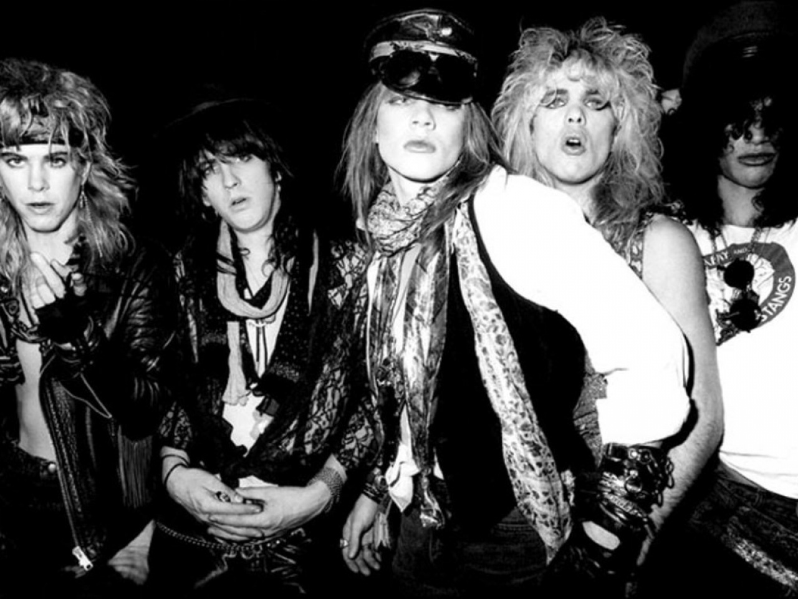

Guns N' Roses is an American hard rock band formed in Los Angeles, in 1985. The classic lineup as signed to Geffen Records in 1986 consisted of vocalist Axl Rose, lead guitarist Slash, rhythm guitarist Izzy Stradlin, bassist Duff McKagan, and drummer Steven Adler
About Group
A year after its release, Guns N' Roses' debut album Appetite for Destruction (1987) reached No. 1 on the Billboard 200, on the strength of the hit "Sweet Child o' Mine", their only single to reach No. 1 on the Billboard Hot 100. The album has sold in excess of 28 million copies worldwide, including 18 million units sold in the United States, making it the best-selling debut album of all time in the U.S. The success of their debut was followed by the eight-song album G N' R Lies (1988) which reached No. 2 on the Billboard 200. The twin albums Use Your Illusion I and Use Your Illusion II (1991) debuted at No. 2 and No. 1 on the Billboard 200 and have sold a combined 35 million copies worldwide, including 14 million units sold in the United States alone. The cover album "The Spaghetti Incident?" (1993) was the band's last studio album to feature Slash and McKagan. After more than a decade of work and many lineup changes, Guns N' Roses released the long-awaited album Chinese Democracy (2008) which, at an estimated $14 million in production costs, made it the most expensive album to ever be produced in music history. It debuted at No. 3 on the Billboard 200 but undersold industry expectations, despite mostly positive critical reception. Guns N' Roses have been credited with reviving the mainstream popularity of rock music, at a time when popular music was dominated by dance music and pop metal. Their late 1980s and early 1990s years have been described as the period in which they brought forth a "hedonistic rebelliousness" reminiscent of the early Rolling Stones, a reputation that had earned them the nickname "The World's Most Dangerous Band". The band's classic lineup, along with later members Reed and drummer Matt Sorum, were inducted into the Rock and Roll Hall of Fame in 2012, their first year of eligibility.
Members
    Interviews with Guns N' Roses band members suggest that between 1994 and 1996, the band sporadically began to write and record new material, most of which, according to Slash, had been written by Rose.[69] Rose has stated the exact opposite in the open letter on the official Guns N' Roses website in 2008, stating that the album was mostly a "Slash album" and Rose was allowed very little input into the album.[70] According to Matt Sorum, in 1996, the band had recorded 7 songs, with 7 more in the writing stages, and intended to release a single album with 10 or 12 songs, with a release date of Spring 1997.[71] Sorum also mentioned that Slash's Snakepit debut album It's Five O'Clock Somewhere "could have been a Guns N' Roses album, but Axl didn't think it was good enough."
In May 1994, Gilby Clarke mentioned in an interview that there is "no 'next' Guns N' Roses album" adding, "We started working on one, and it got canned."[72] Regarding the dysfunction of the band's recording at that time, Rose is quoted as saying, "We still needed the collaboration of the band as a whole to write the best songs. Since none of that happened, that's the reason why that material got scrapped."[73] Rose told USA Today in a 2012 interview he didn't write any music "for years" in the mid-1990s because of criticism from bandmates Slash and Duff McKagan, as well as ex-fiancee Stephanie Seymour.
Gallery
- 

- 
Contact
- Appetite for Destruction (1987)
- G N' R Lies (1988)
- Use Your Illusion I (1991)
- Use Your Illusion II (1991)
- "The Spaghetti Incident?" (1993)
- Chinese Democracy (2008)